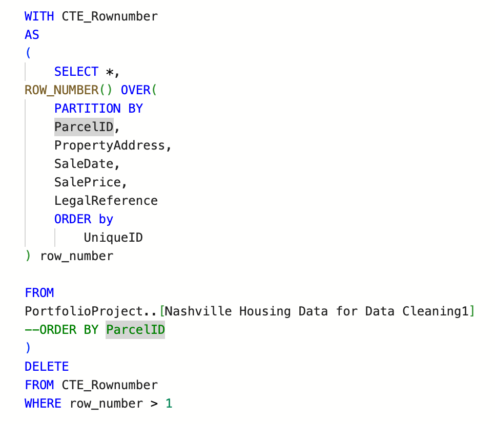
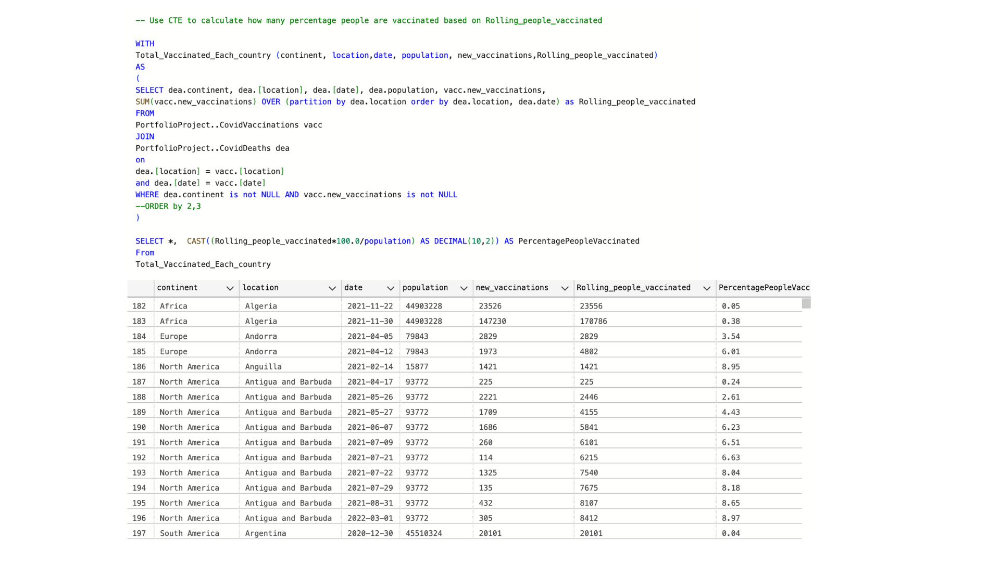
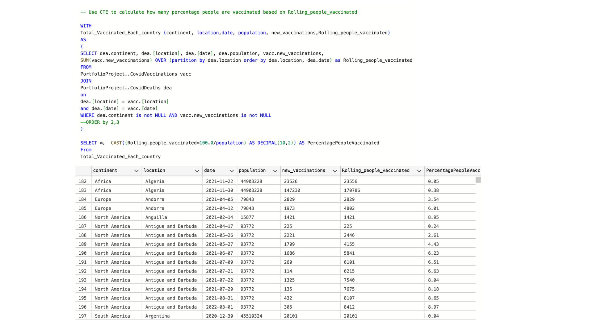

Data Cleaning in SQL
In today's data-driven world, data analysts play a vital role in extracting valuable insights from large datasets. However, before analysis can begin, ensuring data quality is crucial. This is where SQL data cleaning comes into the picture. In this portfolio project, we explore why SQL data cleaning is of utmost importance and why it is an essential skill for every data analyst.
Ensuring Data Accuracy and Integrity (Data Cleaning on Nahsville Housing data)
SQL data cleaning involves identifying and rectifying errors, inconsistencies, and missing values within datasets. By doing so, data analysts can ensure that the data they work with is accurate, reliable, and consistent. Clean data serves as a solid foundation for robust analysis and confident decision-making. Below are few examples of cleaning data.
Eliminate duplicate data, one can employ a Common Table Expression (CTE) to query the table order by unique ID, and subsequently delete the identified duplicates from the dataset.
Utilizing the PARSENAME function, to split the OwnerAddress into distinct columns: Address, City, and State.

Modify the entries in the "soldAsVacant" column by replacing "N" with "No" and "Y" with "Yes".

On my GitHub account, you can find several additional functions that can be utilized in the data cleaning process. These include capabilities for standardizing date formats, populating property addresses, merging new tables into the existing ones, and removing unused columns.
View Full Project in GitHubCovid 19 Data Exploration
The data utilized for this analysis was obtained from the trustworthy data repository 'ourworldindata.org'. The examination of this dataset encompasses various analytical tasks, such as computing daily death percentages in the United States, identifying the highest total reported deaths per country, and analyzing the count of COVID-19 vaccinated individuals. Although this portfolio project showcases only a subset of functions, you can find more of them on my GitHub account.
 Utilizing a CTE, we can create a temporary table to facilitate specific queries. In this scenario, we will join two tables: one containing data on COVID vaccination and the other on COVID deaths. The goal is to identify individuals who have been vaccinated against COVID-19 in each country and continent.
View Full Project in GitHub
Utilizing a CTE, we can create a temporary table to facilitate specific queries. In this scenario, we will join two tables: one containing data on COVID vaccination and the other on COVID deaths. The goal is to identify individuals who have been vaccinated against COVID-19 in each country and continent.
View Full Project in GitHub